陳亮竹 Liang-Chu, Chen
中原大學資訊管理學系


名言 Quote
My challenge is to be better than yesterday, we can't be compared to anyone, the only person we can measure is ourselves.基本資料 Personal Information
個性: 內向、理智興趣: 閱讀、聽音樂、攝影
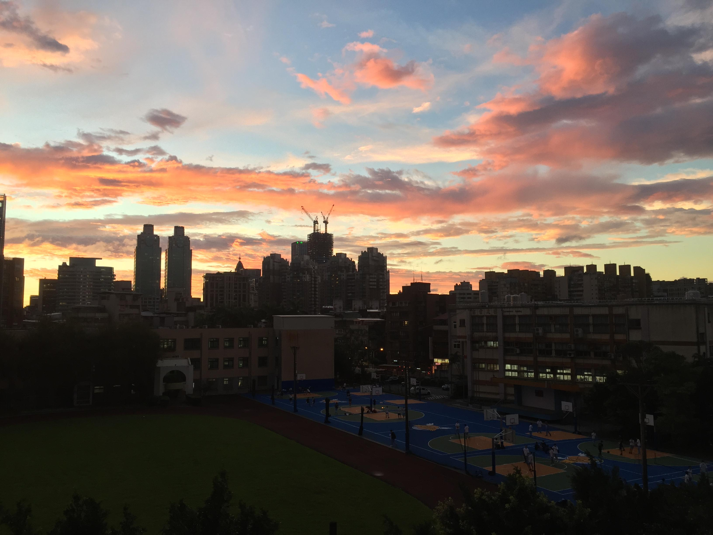 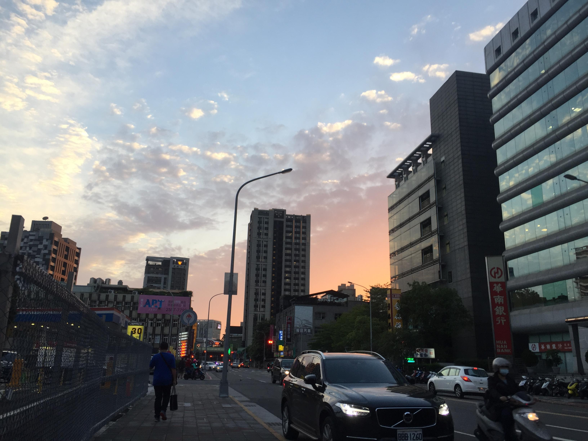
獲獎紀錄 Awards
| 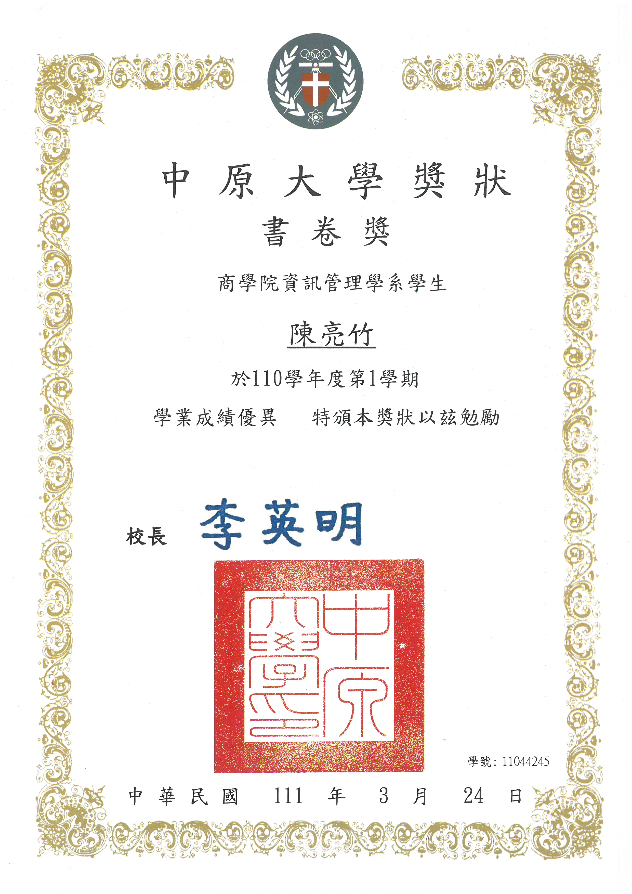 |

|
| 110-1書卷獎 | 110-2書卷獎 |
專業技能 Skill
Python 75%Java 70%
VBA 60%
語言能力 Language Skill
英文 English 75%韓文 Korean 40%
泰文 Thai 35%
社團經驗 School Club

管樂團高一的時候在管樂團擔任長笛手。跟著樂團參加了許多不同的表演，包含校園的大小活動。 |
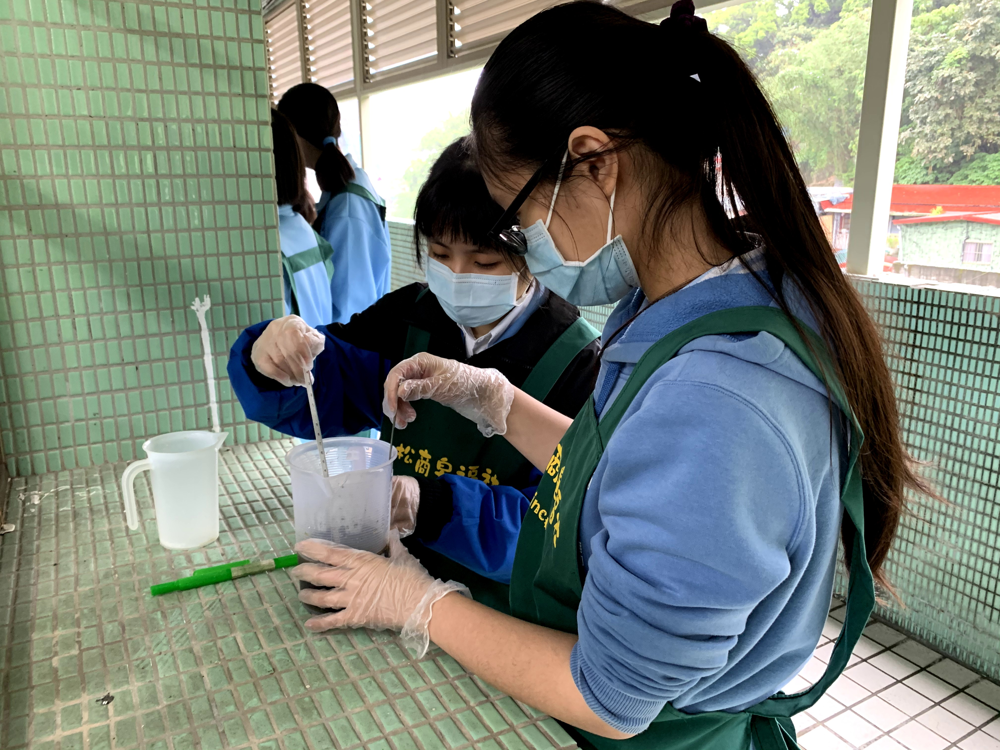
皂服社在社期間擔任總務股長。這個社團主要是以做肥皂為主，但因為社團裡面有許多身心障礙者，所以我們也需要學會如何和他們相處。 |
工作經驗 Work Experience
|
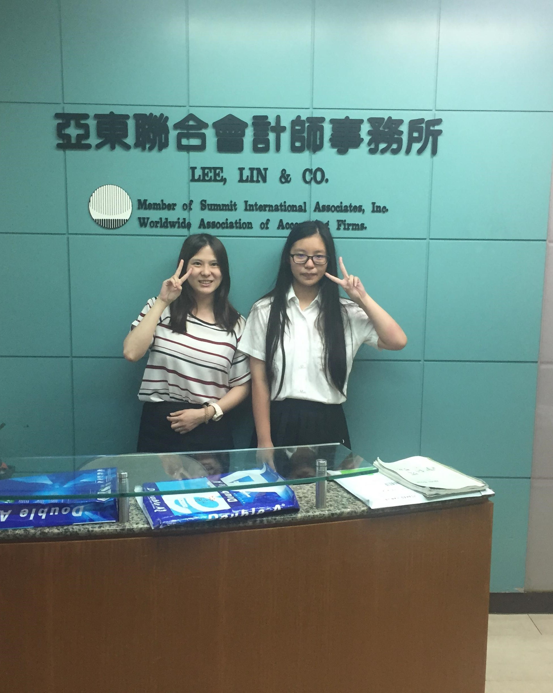
亞東會計師事務所實習去會計師事務所實習是一段我認為非常特別的經歷，在兩個月的期間輪班在下課後去事務所幫忙處理會計相關的事務，也讓我對會計這個行業更加了解。 |
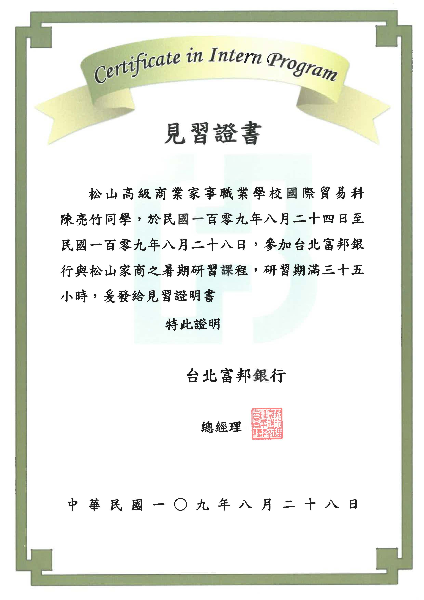
富邦銀行實習在富邦銀行的實習並不是真的參加工作，更多的是去學習做為要進入銀行業的人應該學會什麼。對於法律層面及商業層面的介紹都非常完整。 |
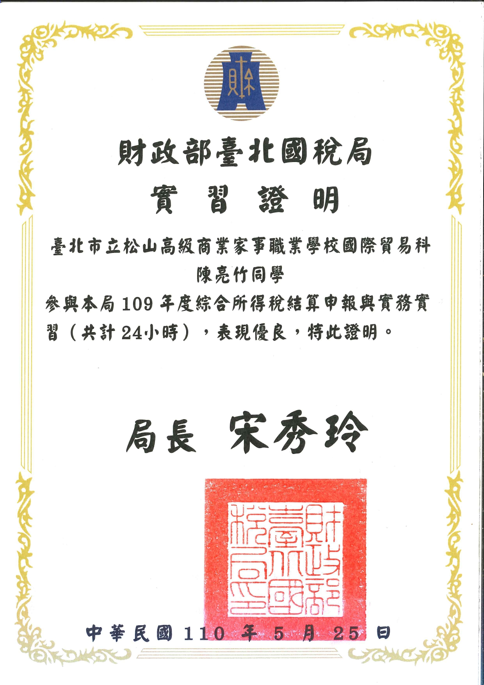
國稅局實習國稅局的實習主要工作是幫助民眾試算綜合所得稅，並且協助民眾報稅。在這個實習當中，我學會了怎麼跟各種各樣的人溝通及了解對方的需求。 |
比賽經驗 Competition Experience
|
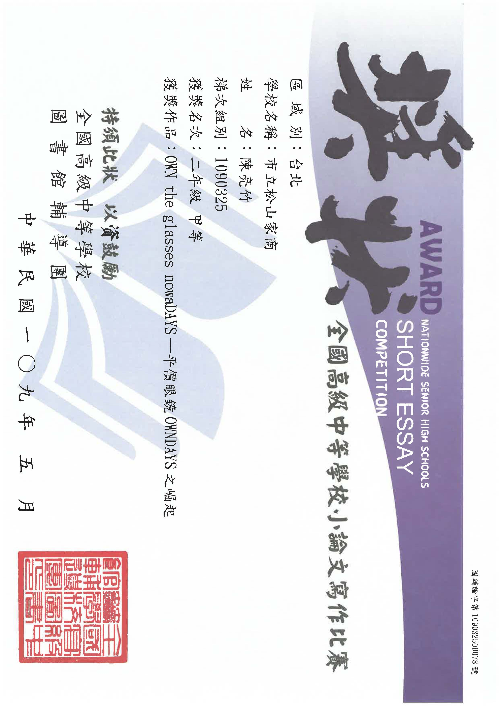
中學生小論文甲等高職時期，老師們有要求每個人都需要組小組並且要投稿。意外獲得甲等的成績，這也讓我對論文的瞭解更深刻了。 |
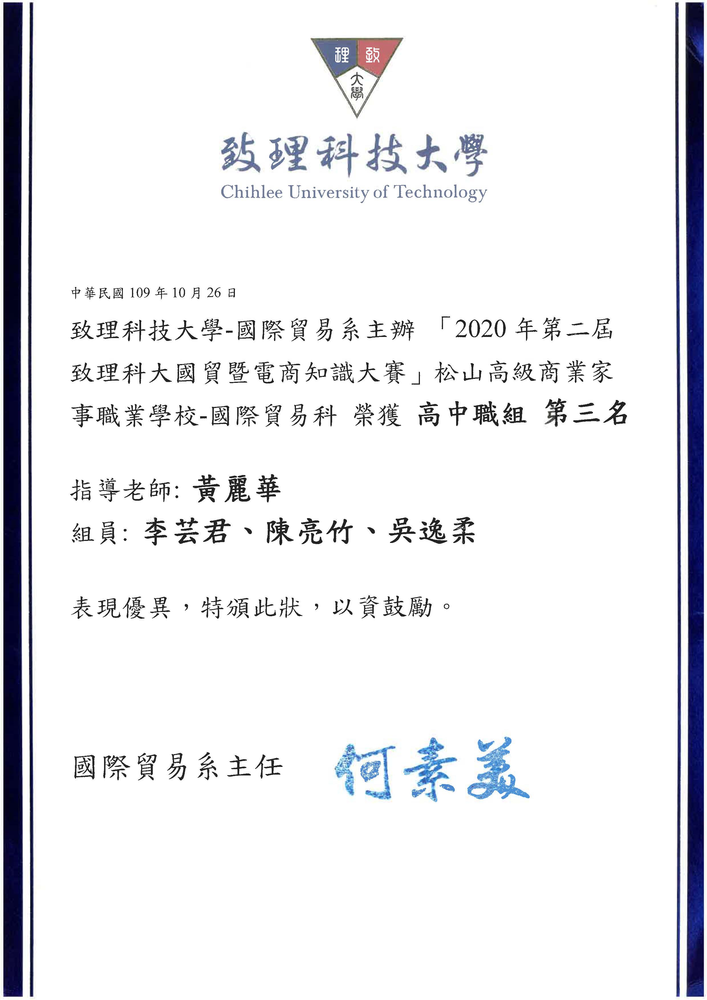
致理國貿比賽團隊第三名過去我是國貿科的學生，老師提出讓我們組團去比國貿相關的比賽，我們也有幸得到第三名的好成績。讓我知道我不管是電商或是國貿都有一定的知識儲備。 |
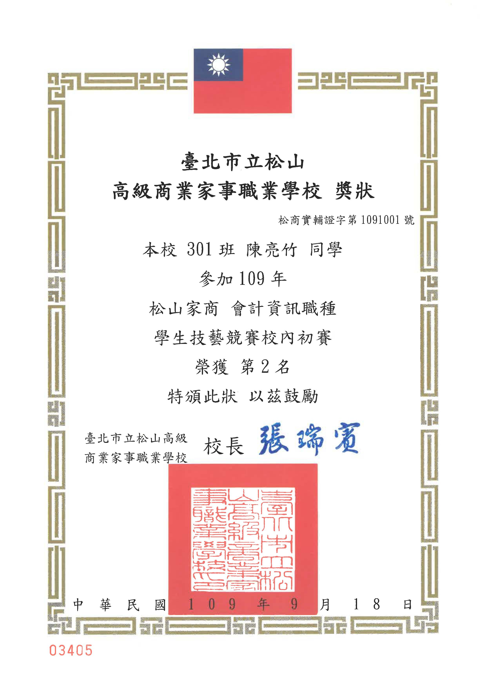
技藝選手校內初賽第二名全國技藝競賽是高職裡面算是非常重要的比賽，經過校內初賽我成為了會計資訊類別的副選手，並且參與培訓。 |
專案 Project
|
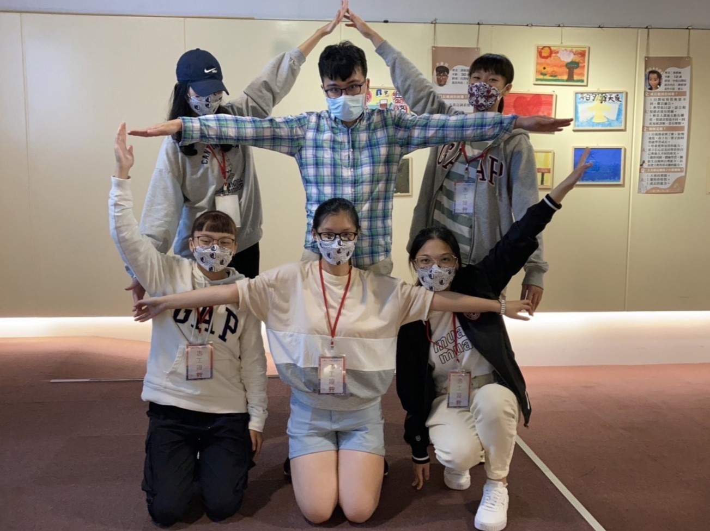
管理學星星藝術季 「醜小鴨」紙偶戲劇聯合公益畫展 因為這堂課需要去找到服務的活動，我們剛好看到這個活動，覺得非常有趣。主辦單位是關於自閉症兒童的關懷及協助，也和我自己的個人經驗非常的有關，所以我對這個活動非常印象深刻。 |
|